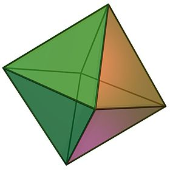
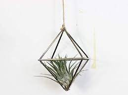
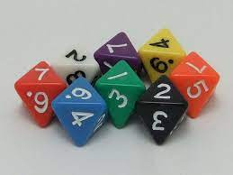
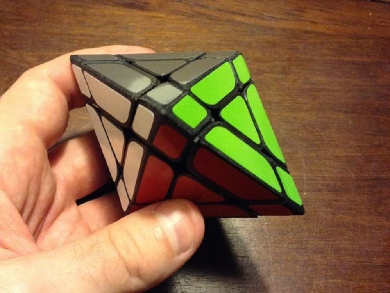
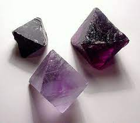

Calculate the Volume and Surface Area of an Octahedron

Please enter the length of the edge here:
An octahedron is a polyhedron that has six vertices, eight faces, and twelve edges. It is formed by connecting the bases of two pyramids together. The volume and surface area of an octahedron can be calculated using the value of only one edge.

Show how interesting you think octahedrons are using this slider: